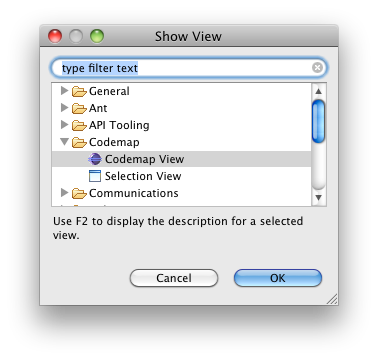

The main feature of Codemap is the Codemap View displaying the acutal map of your code.
To activate Codemap View go to "Window" → "Show View" → "Other..." and select our view "Codemap View" in the category "Codemap".

That's it ... the Codemap View should appear in your IDE.